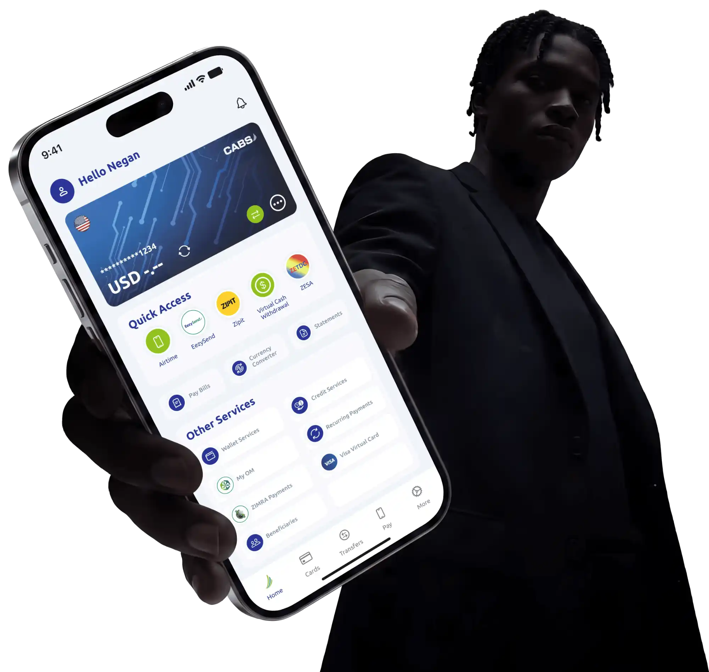
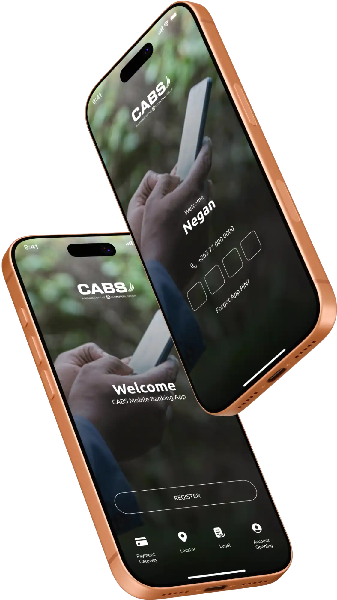
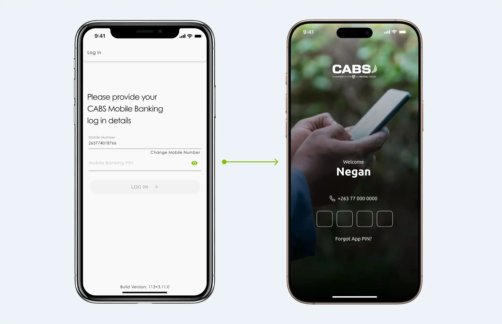
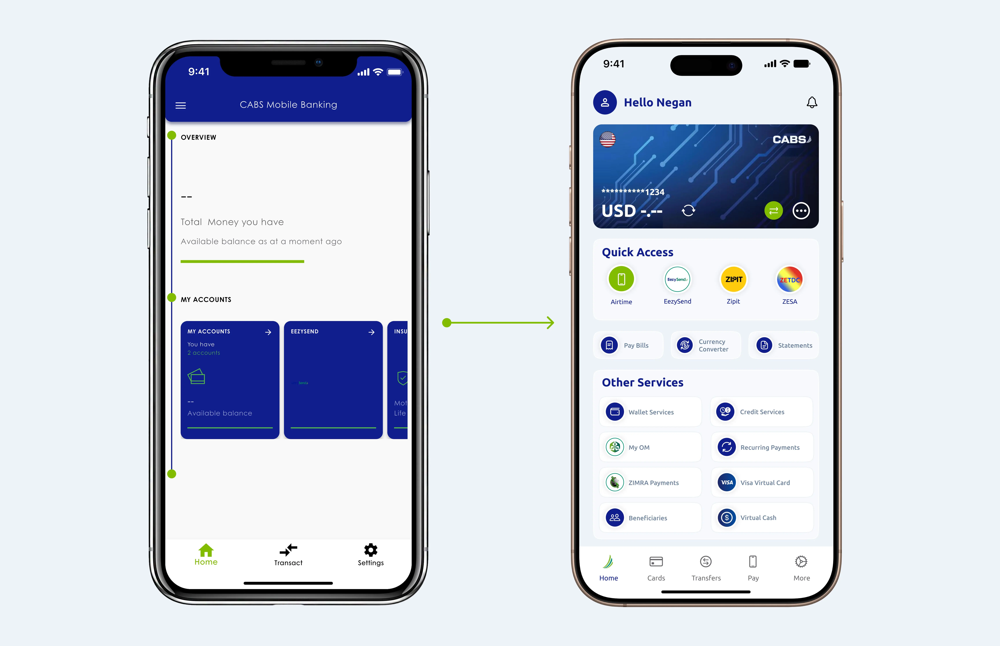
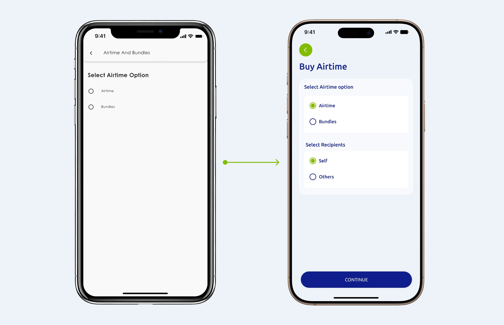
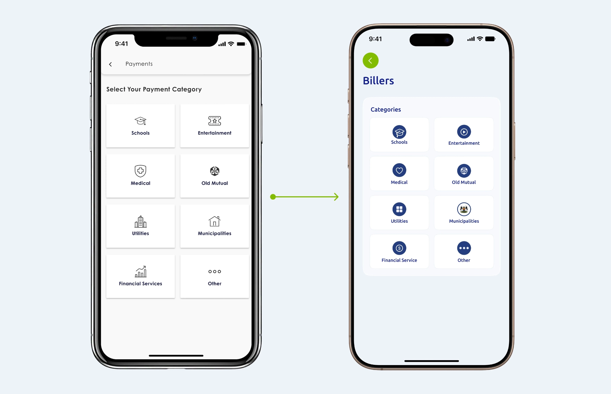
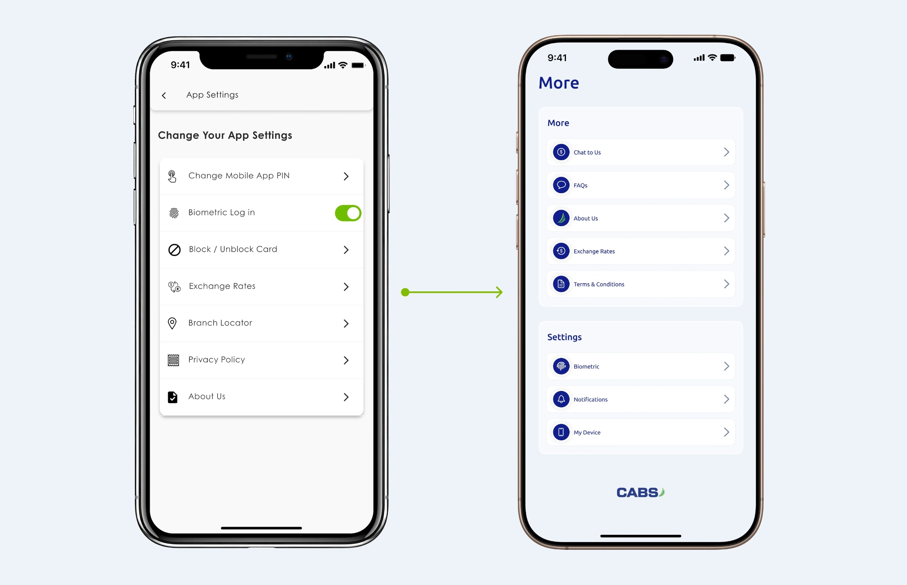
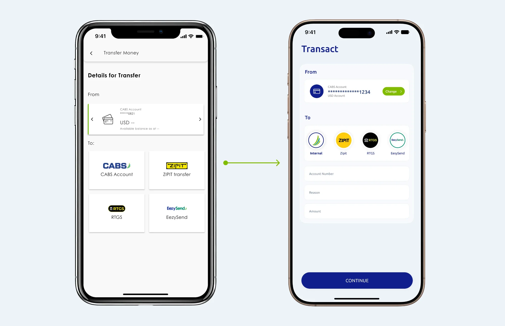
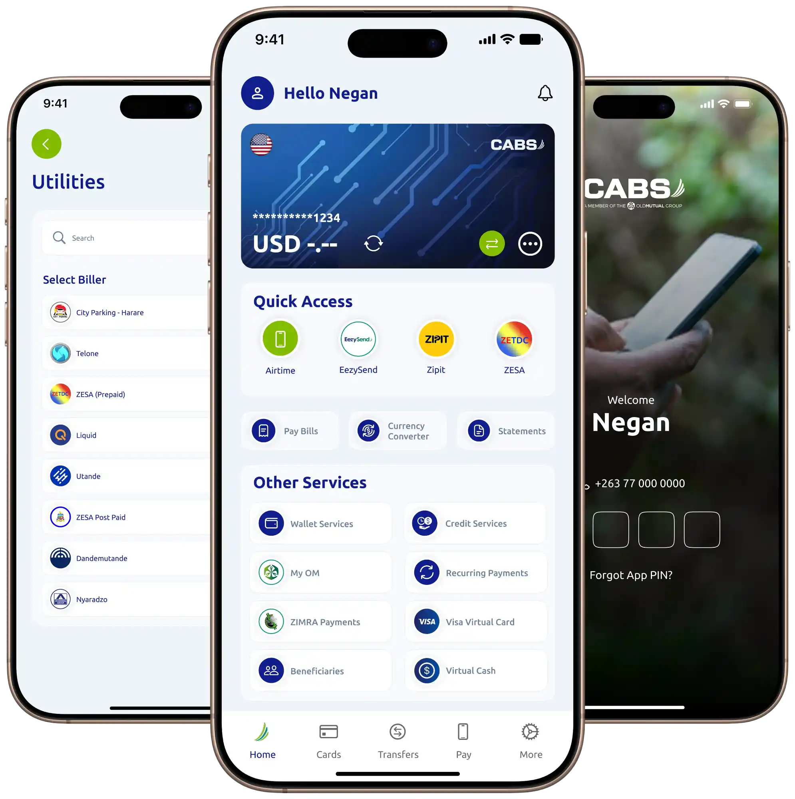

Banking, redesigned
around the everyday.
 A refined mobile banking experience for CABS, designed to make everyday banking feel simpler, clearer and
more
effortless.
A refined mobile banking experience for CABS, designed to make everyday banking feel simpler, clearer and
more
effortless.

One screen.
Everything within reach.
The homepage was designed around a clear hierarchy: the user's most important financial information
appears first,
followed by frequently used services and supporting utilities.
The visual system uses layered cards, rounded containers, strong typography and familiar iconography to
create clear
groupings without making the interface feel overwhelming.
The details are where the
experience comes together.
Behind every screen is a collection of decisions designed to make banking feel intuitive, predictable
and effortless.
Before you move money,
the experience should already
feel effortless.
The login and landing experience establishes the visual language of the application from the very first
interaction.
The landing screen introduces the CABS digital banking experience with clarity, while the login experience
keeps authentication focused and straightforward—giving users a familiar path into their banking.

From functional
screens to a more cohesive
digital experience.
The redesign focused on bringing greater visual consistency, hierarchy and clarity to the banking
experience.
Before The existing interface provided the required functionality, but the visual language
lacked the consistency and
hierarchy needed to create a cohesive modern experience.
After The redesigned UI introduced a clearer visual system, stronger hierarchy, refined
components and a more
consistent interaction language across the application.






A banking experience
designed to feel clearer
at every step.
The CABS mobile banking UI was an exercise in creating a visual system that balances brand, usability and
simplicity.
From the first login to everyday transactions, every screen was designed to feel like part of the same
experience.

Banking, redesigned around the everyday.